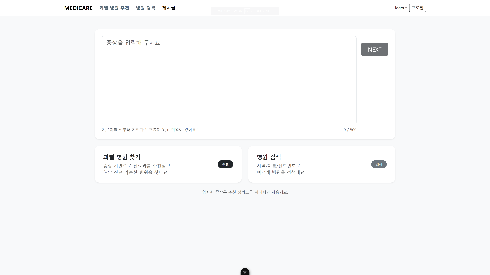
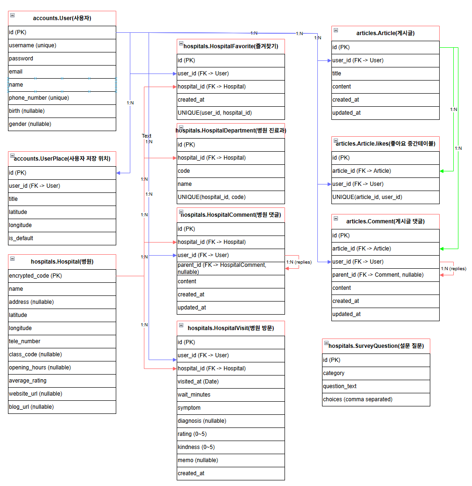

문제 정의
사용자가 “어디가 아픈지”는 설명할 수 있어도 어떤 진료과를 찾아야 하는지 바로 판단하기는 어렵습니다. Medicare는 증상 입력, AI 진료과 추천, 거리 기반 병원 탐색, 방문 기록까지 하나의 의사결정 흐름으로 묶었습니다.
사용자가 “어디가 아픈지”는 설명할 수 있어도 어떤 진료과를 찾아야 하는지 바로 판단하기는 어렵습니다. Medicare는 증상 입력, AI 진료과 추천, 거리 기반 병원 탐색, 방문 기록까지 하나의 의사결정 흐름으로 묶었습니다.
병원 공공 데이터를 정리해 진료과별 검색이 가능하도록 모델링하고, 즐겨찾기, 댓글, 방문 이력, 저장 위치를 Django REST API로 구성했습니다. Vue 화면은 Pinia 상태와 Axios API 호출을 기반으로 로그인 이후의 실제 사용 흐름을 처리합니다.
자연어 증상이 충분히 길면 즉시 AI 분석을 수행하고, 짧은 입력은 추가 설문으로 보완해 추천 진료과를 도출했습니다.
추천 진료과와 사용자 기본 위치를 기준으로 병원을 필터링하고, 하버사인 거리 계산으로 가까운 병원을 정렬했습니다.
방문일, 증상, 진단, 대기시간, 평점과 메모를 남겨 개인 병원 이용 기록처럼 관리할 수 있게 했습니다.
게시글, 댓글, 좋아요, 병원 댓글, 즐겨찾기를 연결해 병원 경험을 공유하고 다시 찾아볼 수 있도록 구성했습니다.

accounts, hospitals, articles 도메인을 분리하고 병원 데이터, 진료과, 즐겨찾기, 댓글, 방문 기록, 사용자 저장 위치를 연결했습니다. 추천 결과는 사용자 위치와 병원 좌표를 함께 사용해 거리순으로 정렬됩니다.

Vue Router와 Pinia를 사용해 로그인 상태, 증상 입력, 추천 결과, 병원 검색, 프로필 화면 흐름을 관리했습니다.
Django REST Framework로 병원 검색, AI 추천, 방문 기록, 댓글, 즐겨찾기 API를 구성했습니다.
병원, 진료과, 사용자 위치, 병원 댓글, 방문 기록, 커뮤니티 모델을 분리해 검색과 기록 흐름을 유지했습니다.
핵심은 증상 분석 결과를 단순 텍스트로 끝내지 않고 진료과 검색, 병원 상세, 개인 기록으로 이어지게 만든 점입니다.
공공 병원 데이터와 진료과 정보를 병합하고, 검색과 추천에 필요한 필드 중심으로 정리했습니다.
병원, 진료과, 방문 기록, 즐겨찾기, 댓글, 사용자 저장 위치 모델을 설계하고 REST API로 연결했습니다.
증상 입력 결과가 추천 진료과와 병원 목록으로 이어지도록 라우팅, 쿼리 처리, 검색 UI를 구성했습니다.
즐겨찾기, 방문 이력, 내가 남긴 병원 댓글을 사용자 화면에서 확인할 수 있게 했습니다.
AI 응답에서 추천 진료과 문구가 매번 같은 형식으로 오지 않을 수 있어 정규표현식으로 핵심 진료과를 추출하고 실패 케이스를 예외 처리했습니다.
사용자 기본 위치와 병원 좌표를 하버사인 공식으로 계산해 추천 병원 목록이 실제 방문 가능성에 맞춰 가까운 순서로 정렬되도록 했습니다.
엑셀 기반 병원 데이터와 진료과 데이터를 모델 관계에 맞게 정리하고 fixture로 로딩해 검색과 상세 조회가 같은 데이터 구조를 사용하도록 맞췄습니다.
증상 입력, 추천 결과, 병원 검색, 프로필처럼 상태가 이어지는 화면을 컴포넌트 단위로 구성하기 위해 사용했습니다.
메인, 추천, 검색, 병원 상세, 방문 기록, 프로필 화면을 라우팅 기준으로 분리했습니다.
로그인 상태와 토큰, 사용자 정보를 전역으로 유지해 API 요청과 화면 접근 흐름에 사용했습니다.
Django REST API와 통신하는 요청 흐름을 정리하고 추천, 검색, 댓글, 방문 기록 데이터를 화면으로 가져왔습니다.
accounts, hospitals, articles 앱을 나누고 병원 검색과 사용자 기록 도메인을 관리하기 위해 사용했습니다.
프론트엔드에서 필요한 병원 목록, 상세, 추천, 방문 기록, 댓글 데이터를 REST API로 제공했습니다.
회원가입, 로그인, 토큰 기반 인증 흐름을 빠르게 구성하고 보호된 API 접근에 적용했습니다.
프로젝트 개발 단계에서 병원 데이터와 사용자 기록을 빠르게 저장하고 검증하기 위한 데이터베이스로 사용했습니다.
사용자 증상과 설문 응답을 분석해 추천 진료과를 도출하는 서비스 로직에 사용했습니다.
병원 위치 검색, 지도 마커, 장소 탐색 흐름을 웹 화면에 연결하기 위해 사용했습니다.
엑셀 기반 병원 원천 데이터를 병합하고 정리하는 전처리 과정에 사용했습니다.
정리된 병원, 진료과, 설문 데이터를 Django 모델에 반복 로딩하기 위해 fixture 형태로 구성했습니다.